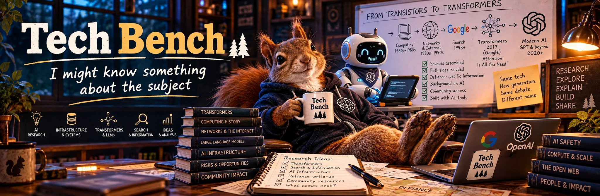

Every game in Everyday Cool has a back door: a lesson page that shows the physics it runs on and the receipts that it works. When a game's "How it's built" section sends you onward, it sends you here — this bench is where the collection's builders read how the games were made, and why they were made that way. Six lessons, six coding ideas worth stealing: